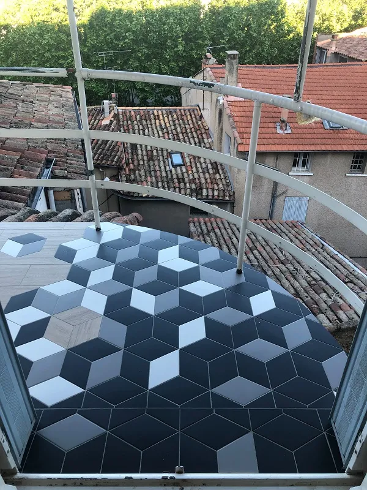

Vous cherchez un carreleur de confiance à Forcalquier ? ABC Carrelage, dirigé par Anthony Borey, est installé à Manosque depuis 2015. Forcalquier se trouve à seulement 20 minutes par la D4096, ce qui nous permet d'y intervenir très régulièrement. Que ce soit pour une construction neuve, une rénovation ou un aménagement extérieur, nous apportons le même soin à chaque chantier dans le pays de Forcalquier.
Notre engagement est simple : un seul interlocuteur du début à la fin, des matériaux de qualité et un travail soigné. Anthony se déplace gratuitement à Forcalquier pour évaluer votre projet et vous remettre un devis détaillé.
Nos services à Forcalquier
Nous proposons à Forcalquier les mêmes prestations qu'à Manosque :
- Chape liquide : chape anhydrite ou ciment coulée au camion-pompe. Idéale pour les planchers chauffants et les grandes surfaces. Planéité au millimètre garantie.
- Carrelage : pose de carrelage intérieur et extérieur, tous formats. Grès cérame, imitation parquet, imitation pierre, carreaux ciment, mosaïque.
- Parquet : pose collée ou flottante de parquet massif, contrecollé ou stratifié.
- Rénovation salle de bain : dépose de l'ancien revêtement, étanchéité, pose du nouveau carrelage, faïence murale et finitions.
Tous nos chantiers sont couverts par une assurance décennale. Vous êtes protégé pendant dix ans.
Réalisation à Forcalquier
Nous avons récemment réalisé une terrasse à Forcalquier qui illustre bien notre savoir-faire. Le projet combinait du carrelage imitation parquet avec des carreaux hexagonaux effet cube 3D, créant un rendu graphique et moderne en extérieur. Ce type de pose demande une découpe précise et un calepinage rigoureux pour que le motif s'aligne parfaitement.

Vous pouvez retrouver d'autres exemples de chantiers sur notre page réalisations.
Villes voisines couvertes depuis Forcalquier
En plus de Forcalquier, nous intervenons dans les communes environnantes : Banon, Reillanne, Céreste, Saint-Michel-l'Observatoire, Mane, Dauphin et Lurs. Le pays de Forcalquier fait partie de notre zone d'intervention habituelle. Pas de frais de déplacement supplémentaires pour ces communes.
Questions fréquentes
ABC Carrelage se déplace-t-il à Forcalquier ?
Oui. Notre atelier est situé à Manosque, à 20 minutes de Forcalquier par la D4096. Nous intervenons régulièrement à Forcalquier et dans tout le pays de Forcalquier pour des chantiers de toute taille.
Quel est le délai pour un chantier de carrelage à Forcalquier ?
Le délai dépend du type de chantier. Pour une salle de bain complète (dépose, étanchéité, pose), comptez 2 à 3 semaines. Pour une pose de carrelage sol uniquement, 3 à 5 jours suffisent selon la surface. Contactez-nous pour un planning adapté à votre projet.
Proposez-vous un devis gratuit pour Forcalquier ?
Oui, le devis est gratuit et sans engagement. Anthony se déplace à Forcalquier pour prendre les mesures, évaluer le support existant et vous remettre un chiffrage détaillé. Faites votre demande en ligne ou appelez le 06 52 25 12 26.